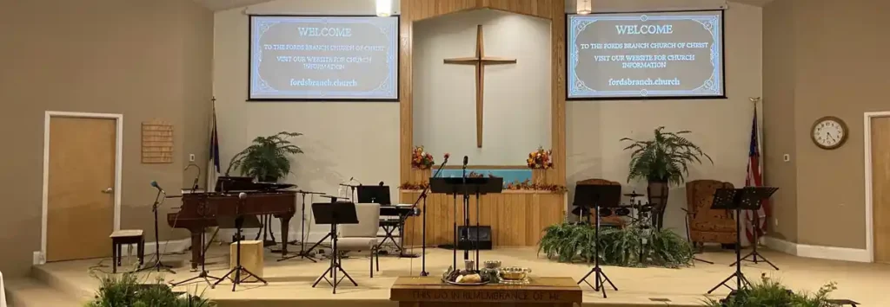

Welcome to
Fords Branch Church of Christ
Welcome
Welcome, and thank you for visiting Fords Branch Church of Christ online. We hope that our website highlights the wide variety of worship, fellowship and service opportunities available. Please feel free to read more about our church on this site, or come in for a visit. We would love to greet you and share with you our love for Jesus Christ and for you, our neighbor.
Check out our YouTube link to view our livestream service every Sunday Morning at 11:00 AM. Click our Bulletin link below to stay up to date on the news of the church.
Our Mission
We believe that the door to salvation is always open and so are the doors to our church. Our mission is proclaimed by Jesus in Matthew 28:19–20: "Therefore go and make disciples of all nations, baptizing them in the name of the Father and of the Son and of the Holy Spirit, and teaching them to obey everything I have commanded you. And surely I am with you always, to the very end of the age."
How Do I Become a Christian?
-
1
Hear Hear the Word (Romans 10:17)
-
2
Believe Believe that Jesus is the Christ (Acts 2:36; Acts 16:31–34)
-
3
Confess Confess that Jesus is the Christ (Romans 10:9–13; Acts 8:36–38; Acts 22:16)
-
4
Repent & Be Baptized For the remission of your sins (Acts 2:38)
Elders
- George Blackburn
- Tony Casebolt
- Dick Jarvis
- Willie Meade
- Charles K. Moore
- Jeff Stanley
Deacons
- Greg Clevenger
- John Gibson
- Greg Hall
- Ralph Keene
- Jason Shepherd